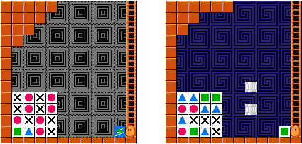
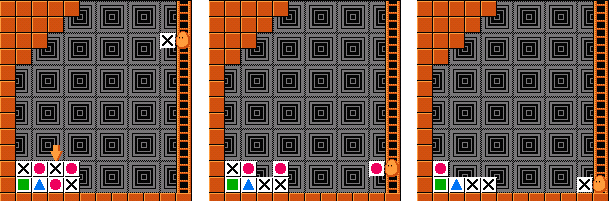

There are 4 kinds of blocks: the blue triangle (T), the pink circle (O), the green square (#) and the cross (X). After firing a block, it keeps flying to the left until it meets a block of a different kind, or reaches a wall. In the former case, the new block is flipped back; in the latter case, the block is reflected and moves down. When moving down, the block flips back the first block of different kind as usual. If the block reaches the bottom wall, it returns to you. Note that each fire must eliminate at least one block, so you can't flip back a block directly by firing at it. As you may guess, a block falls down immediately when the block below it is eliminated, with the help of the gravity. There is also a special magic block which may only appear initially on your hand. It will change into the first block it fires to, so it could be regarded as a sort of 'wildcard' block, as shown in figure 1(a).
The initial blocks always form a square of 4*4, 5*5 or 6*6, on the bottom-left corner of the game. The rows are numbered r1 to r6 from bottom to top, and the columns are numbered c1 to c6 from left to right. There are 12 steps in the ladder (you may convince yourself by counting in figure 1), numbered 1 to 12 from the bottom (the current positions in figure 1) to the top. Since walls can reflect blocks, firing at the 12 steps are actually moving along r1, r2, r3, r4, c1, c1, c1, c1, c2, c3, c4, X in figure 1(a), where X means firing at step 12 will not touch any block (thus an illegal move). Figure 1(b) is a little bit different: pipes can also reflect blocks, so firing at the 12 steps are actually moving along r1, r2, X, r4, X, c1, c1, c1, c1, c2, c3, X. Note that r3 and c4 can never be accessed.
Here is a complete example of how the game illustrated in figure 1(a) is solved (by leaving exactly 3 blocks). Fire four blocks at step 8, 9, 10, 11 (figure 2(a)), then fire at step 10(figure 2(b)) and step 2 (figure 2(c)), finally step 1.

Write a program to solve the game of Flipull with minimal number of fires.
4 3 M First XOXO XOXO OXOX #TOX r1 r2 r3 r4 c1 c1 c1 c1 c2 c3 c4 X 4 3 # Pipes TT## OOTT TXXX O#TX r1 r2 X r4 X c1 c1 c1 c1 c2 c3 X 4 3 T NoGreedy!!! X##T TXXT TTT# OXOT r1 r2 r3 r4 c1 c1 c1 c1 c2 c3 c4 X 4 3 O Tough... XOTO O##O TXOO X#TO r1 r2 r3 r4 c1 c1 c1 c1 c2 c2 c4 X 0
Case 1: First 7 8 9 10 11 10 2 1 Case 2: Pipes 8 4 11 1 2 1 4 2 2 Case 3: NoGreedy!!! 7 11 4 3 11 2 1 2 Case 4: Tough... 10 1 4 1 3 11 1 4 1 3 2